Love live!School Idol Project
.jpg) 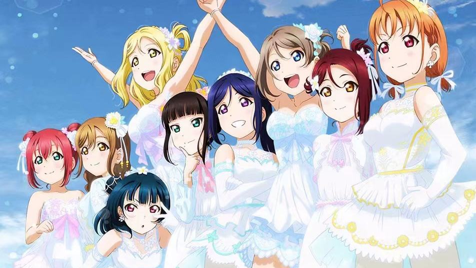
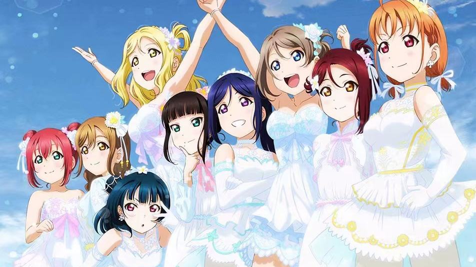
μ's
Aqours
Aqours
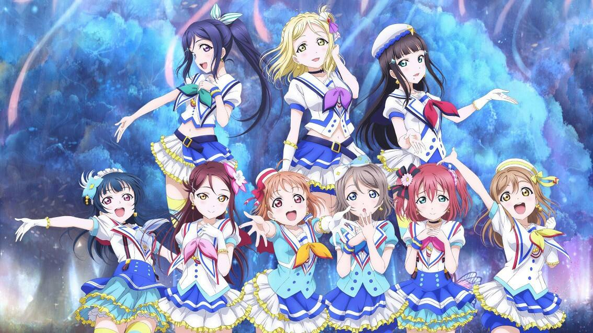 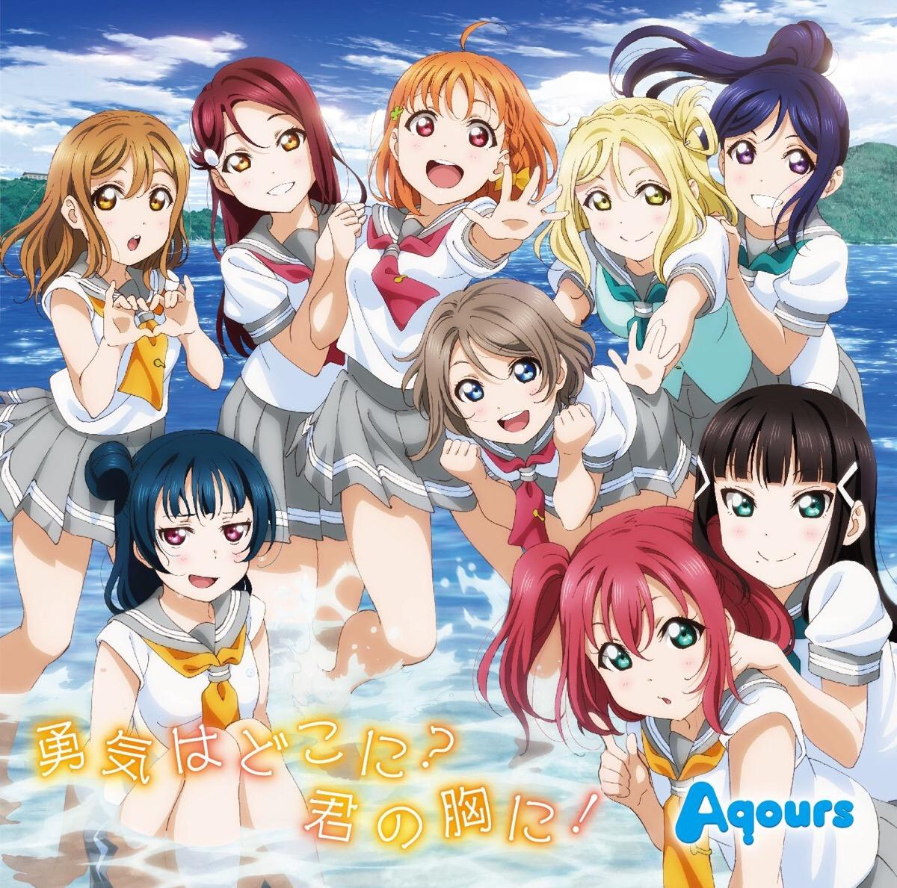 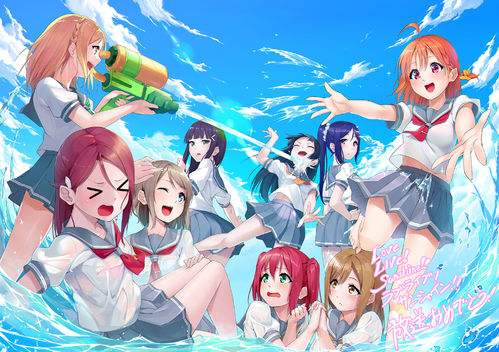Click here to find our goal!
The LoveLive! Sunshine!!!!!Tells the story of nine girls led by high sea song to campus idol Aqours identity, with the light as the goal to march forward courageantly.
Choose a music to keep with!
·TakamiChika
·WatanabeYou
·TsushimaYoshiko
·SakurauchiRiko
·KunikidaHanamaru
·Matsuurakanan
·OharaJulie
·KurosawaDia
·KurosawaRuby
TakamiChika
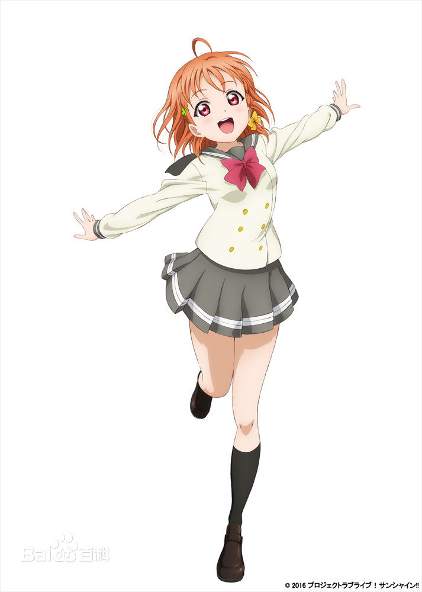
Pu zhi xing girls' school, grade 2.Team CYaRon!.I was responsible for the lyrics together with hua maru.Love is a thousand songs close, open a hot spring hotel in the home, is the youngest sister of the three sisters.Mus fans, mus Leader takasan suiguo, Aqours founder and captain.Bring in everyone around you with your natural clarity and drive.See your charm as a braid next to your ears, braided every morning.He likes to tell bad jokes in radio plays.
WatanabeYou
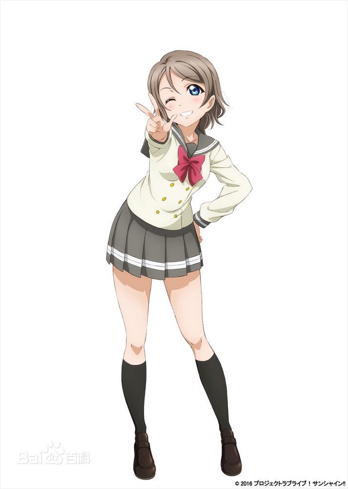
Grade 2.Team CYaRon!.Clothing.Qiange's neighbor, who has been practicing diving since childhood, is a national level diver.The action school that likes professional dress, before thinking.The signature gesture is salutation.The catchphrase is: YOSORO!The sportswoman who often goes to sea with her father, a captain, dreams of becoming a captain, but gets seasick.
TsushimaYoshiko
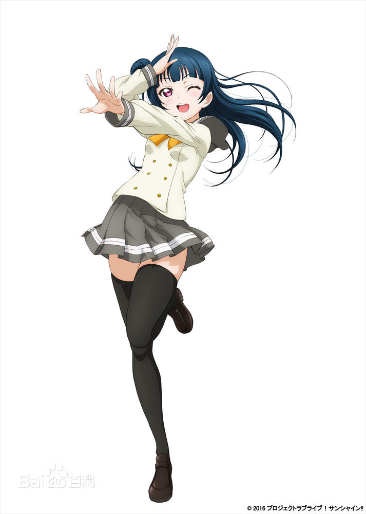
Grade1.Guilty Kiss.I live in downtown mizujin, far from the school.Take a bus to school every day.Bright and bold, clever and wise.Don't like their own name, think "good son (that is, good boy)" such a name is rustic, do not allow others to call.Because often encountered unhappy things, so they think is degenerate angel or devil, claiming to be "ヨ ハ ネ" feather (eve).
SakurauchiRiko
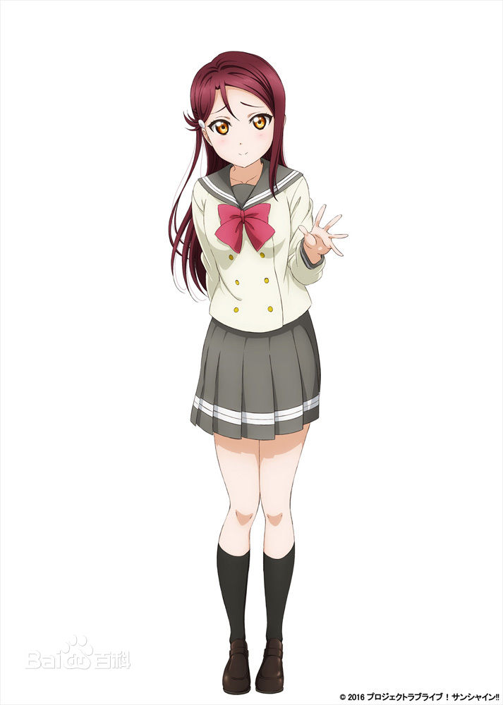
Grade 2.Guilty Kiss.Compose music.Transfer student at takenaka school in akihabara, Tokyo.It looks mature and calm, but it's easy to panic.I changed school because of my father's work.Interior school, art club.Think oneself is a very ordinary high school student.Joined Aqours under several warm invitations .
KunikidaHanamaru
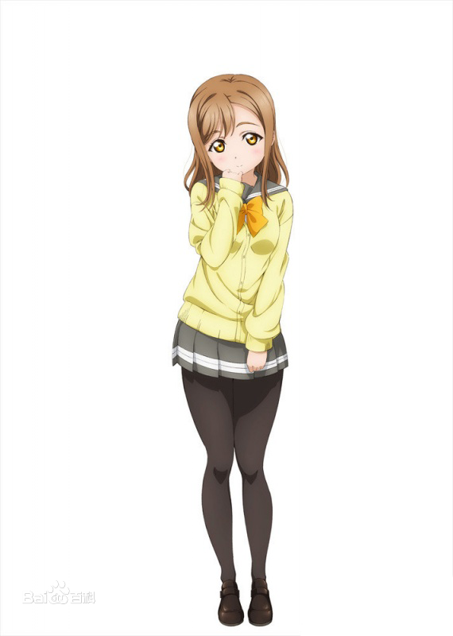
Grade 1.Team AZALEA.Draw a propaganda cartoon of Aqours.Ruby's best friend.School choir member, daughter of a local temple.Dream to become a woman writer, love Japanese literature.I occasionally speak in shizuoka dialect.A chorus solo.Because she didn't know much about fashion, she was laughed at by other students, but ruby stood up for her and admired her knowledge, and was invited into Aqours by ruby.
Matsuurakanan
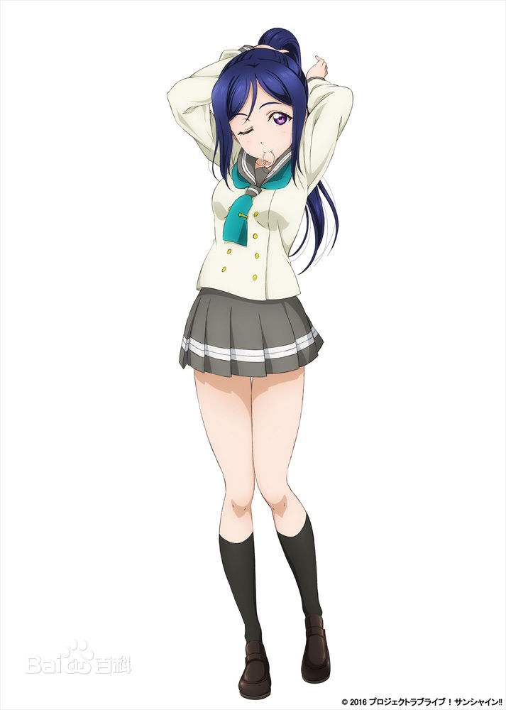
grade 3.Team AZALEA.Thousand song childhood playmate, mature and bright, love diving.From infancy and thousands of songs grew up together childhood sweetheart, like sister care for thousands of songs.With grandpa, will go to grandpa opened diving school to help.Think your charm is muscle.Although I felt that I was not suitable for singing and dancing, I still chose to accompany a thousand songs. In the cartoon version, I was the first one to join Aqours.
OharaJulie
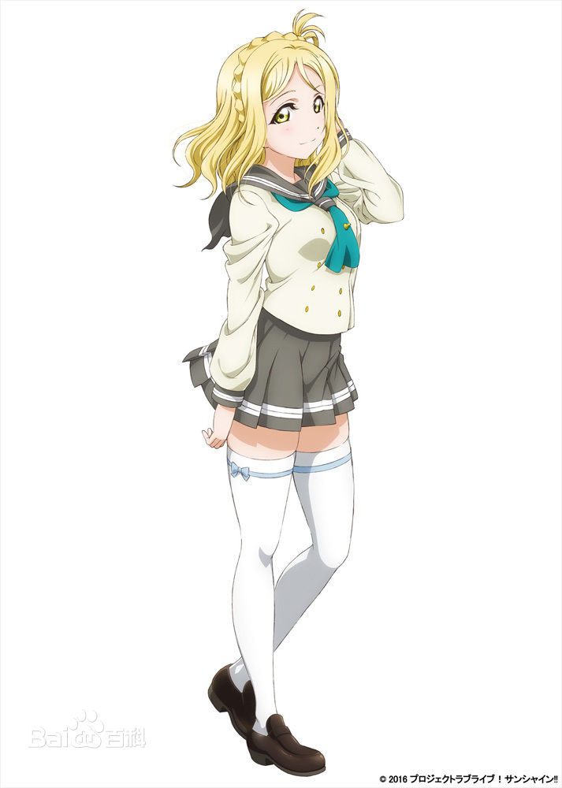
Third graders.Guilty Kiss.American (Italian) Japanese, family has a chain of hotels around the world.The beginning is often alone action, has been secretly observed Aqours.The music type that likes is industrial heavy metal, love to ride a horse, with a name "star bright" horse relation is very good, like surfing very much.I plan to go to college overseas after graduating from high school.Originally interested in Japanese idol, but did not plan to join.Was the last member to join
KurosawaDia
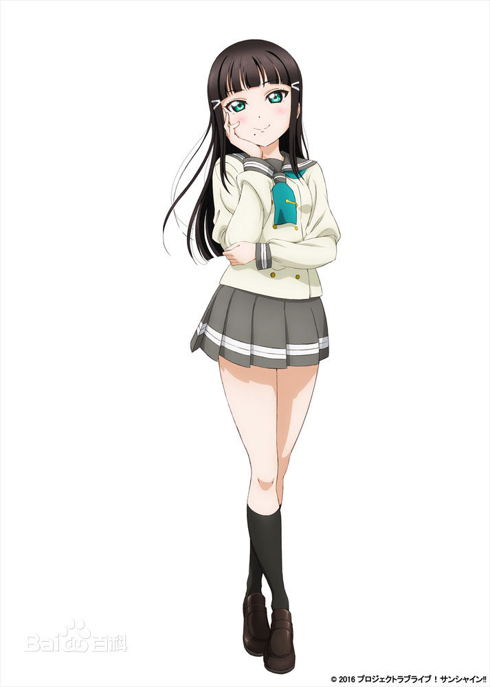
Team AZALEA.Responsible for choreography and training.Blackpool's eldest daughter, President of the student council.The family is the local noble family, the self-respecting perfectionist.Often in the home to help host the work, good at and piano tea ceremony and piano and other skills.I accepted the position because no one wanted to be a student President.Having no interest in idol activities (actually muon's fanatics are also twitters), considering it as a frivolous thing, and having no objection or approval to Aqours activities, later joined Aqours due to his sister ruby (being taken hostage).
KurosawaRuby
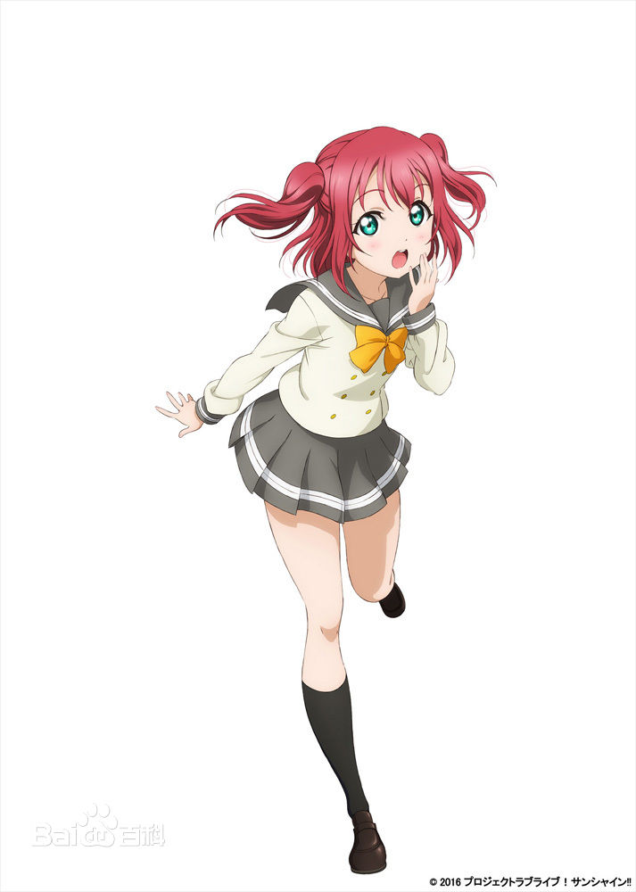
Grade 1.Team CYaRon!.The second daughter of kuroza's family, from a young age, has been longing for an idol, the knowledge of idol far more than ordinary people (one is influenced by her sister).Has been secretly love idol behind the back of serious parents and sister (animation is set after her sister first grade to avoid her sister to read idol magazine).A bit of a prude, suffering from androphobia, not good at talking to men other than dad.After becoming an idol is trying hard to overcome.He persuaded Hanamaru's grandparents to let Hanamaru join the choir.Originally, it was the same as my sister's long hair, which was given up in junior high school and cut into the current length.
Love live Sunshine！
| μ's | Aqour's | Like | 100% | 100% | 100% |
|---|---|---|---|
| Dislike | 0% | 0% | 0% |
| Neutrality | 0% | 0% | 0% |